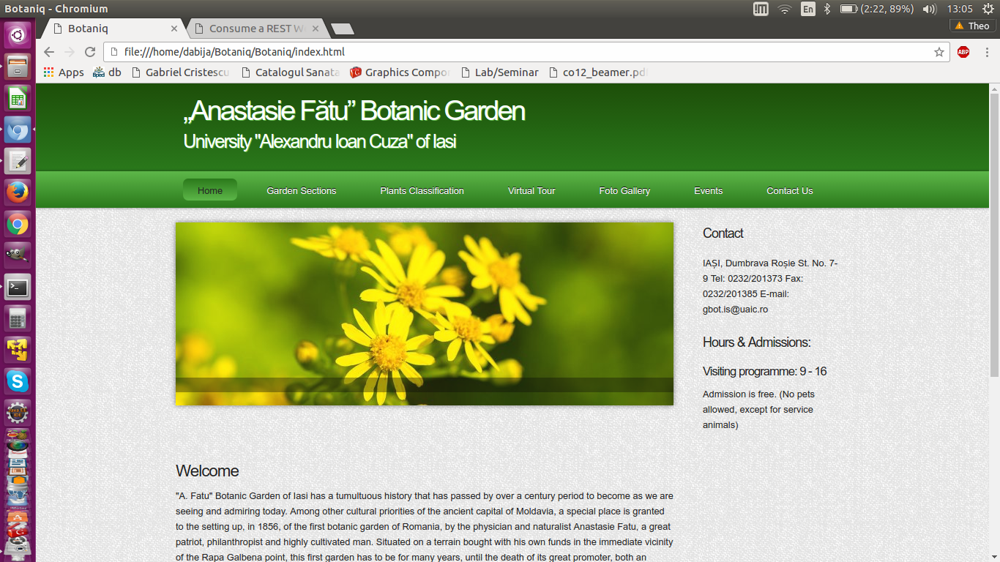
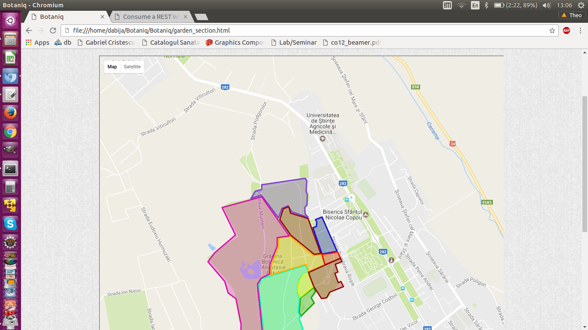
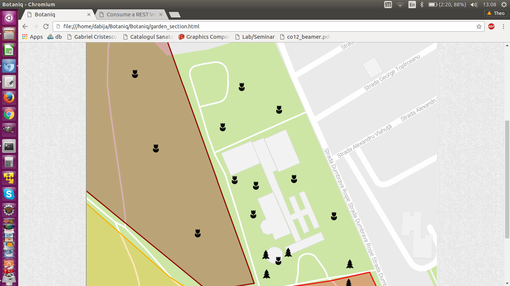
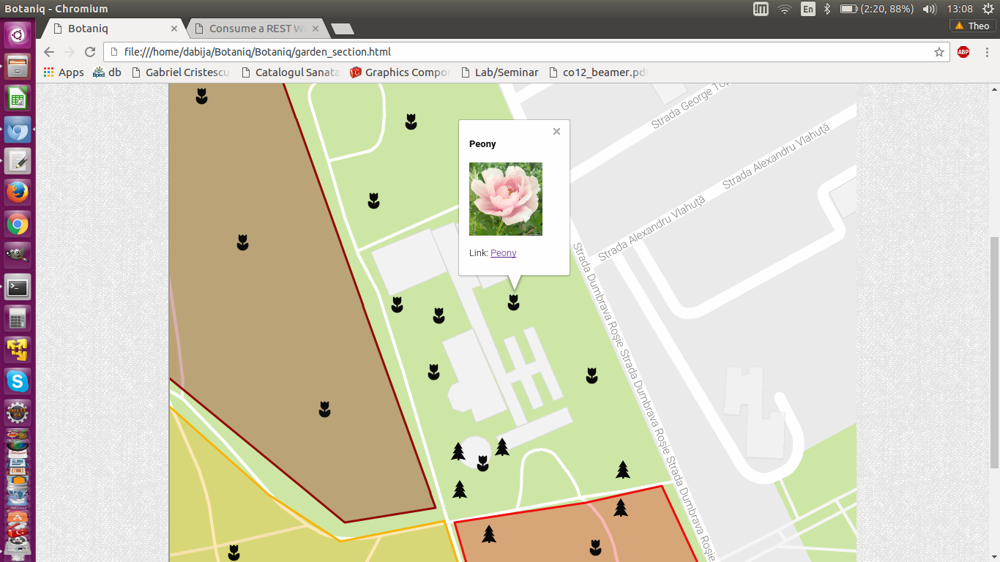
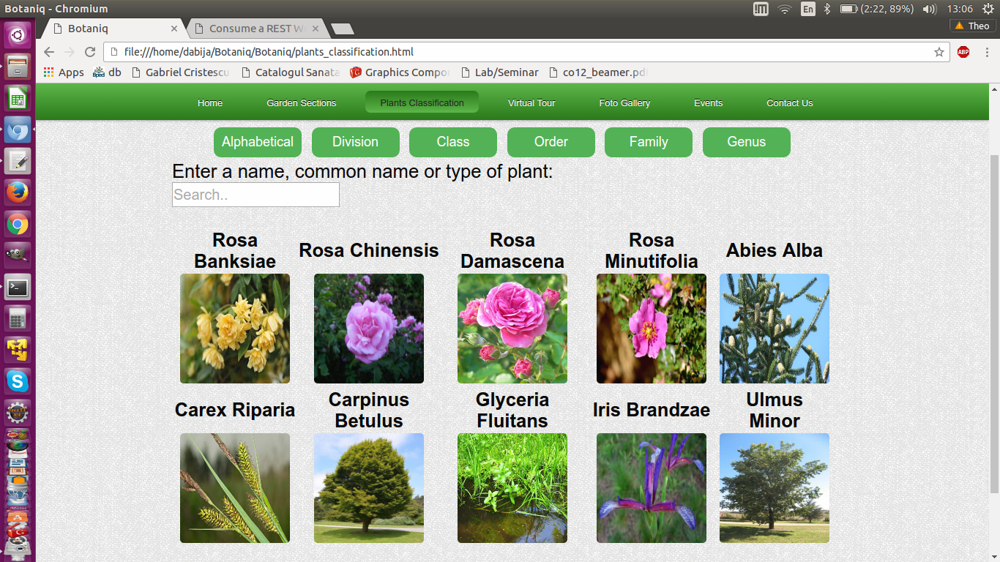
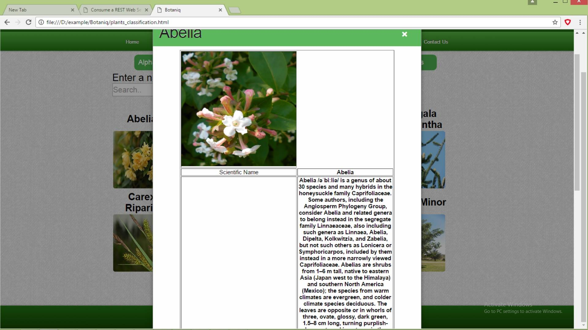
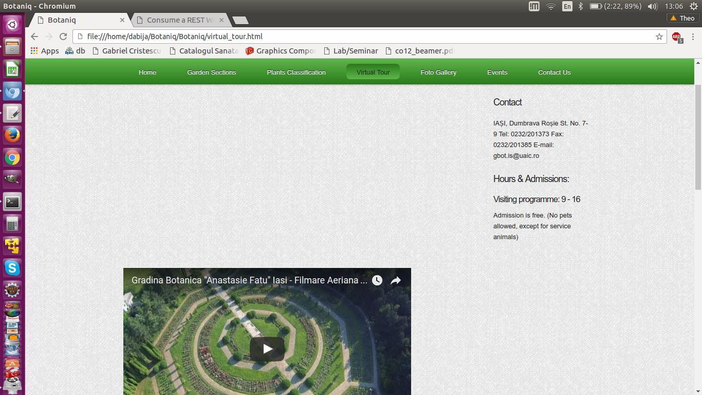
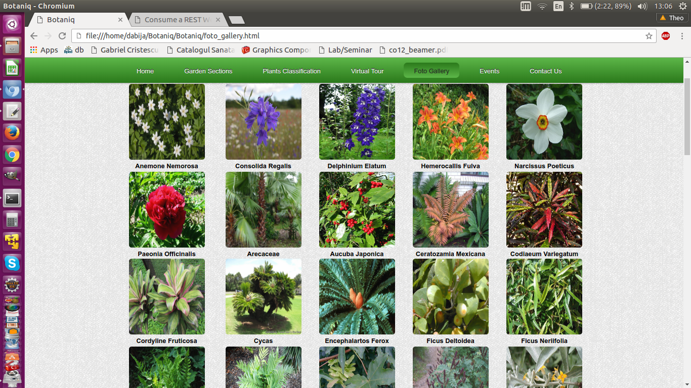
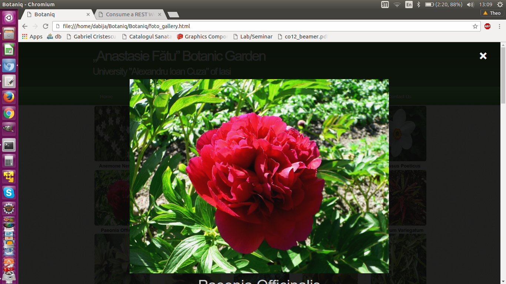

View and search for plants
- Home Page: For exploaring de web site we have a menu under de login and register section:

- Garden Section: In this page we have a map where ywe can view different markers on it.

- When you zoom on the map you can see more markers:

- Click on a marker to view info about the plant:

- Plant Classification: on this page we can search plants by name

- Click on a image to view details for that plant:

- Virtual Tour: On this page we can visualize some videos about Botanic Garden Iasi

- Photo Gallery: Here we can see a variouty of plants:

- Click on a image to enlarge it:
